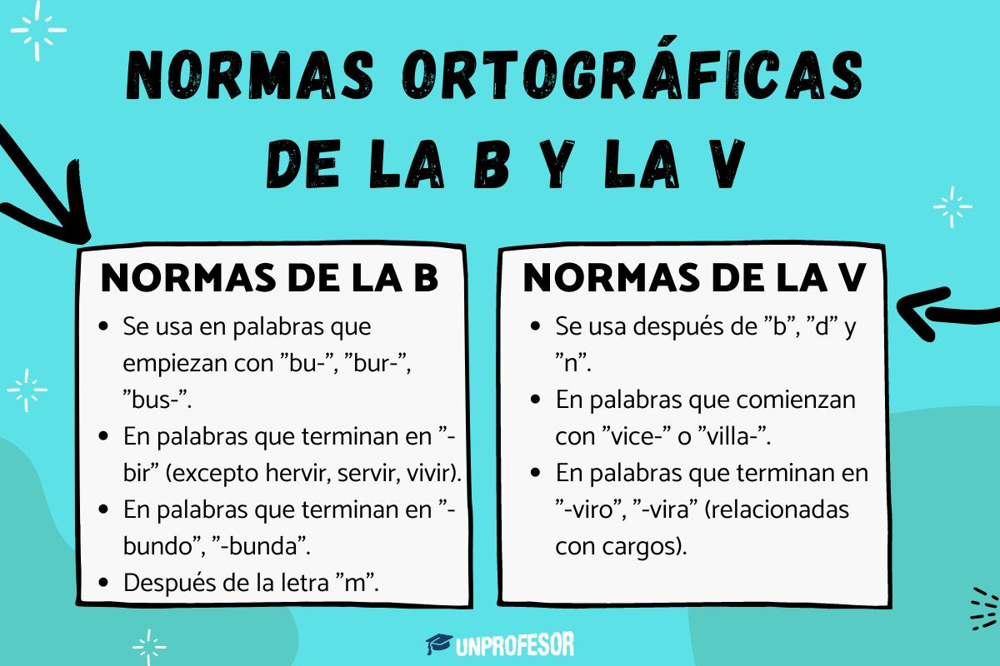
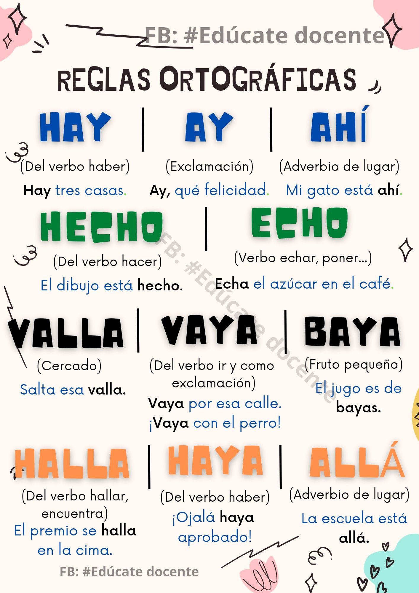

Texto
- 1 sesión (1 hora)
- Parejas
- Todo el grupo
Descripción
En esta sesión, los grupos os intercambiáis los documentos. Cada pareja os convertís en un "editor de libros". Vuestro trabajo no es borrar el texto de los compañeros, sino leerlo con lupa para encontrar faltas de ortografía o frases que no se entienden. Utilizaréis la herramienta de "Añadir comentario" (el icono del bocadillo con un +) para dejar notas como: "Aquí falta una mayúscula" o "Esta palabra se escribe con B". Así, los autores originales podrán ver las sugerencias y corregirlas ellos mismos.
¿Qué podemos tener en cuenta?

Rut Blasco. https://www.unprofesor.com/lengua-espanola/normas-ortograficas-de-la-b-y-la-v-6638.html (De uso gratuito bajo la Licencia Creative Commons Reconocimiento-Compartir Igual 4.0).

Orientación Andújar. https://www.orientacionandujar.es/2019/07/08/laminas-con-reglas-de-ortografia-sencillas-para-los-mas-peques/ (De uso gratuito bajo la Licencia Creative Commons Reconocimiento-Compartir Igual 4.0).

Edúcate Docente. https://es.pinterest.com/pin/6262886975217424/ (De uso gratuito bajo la Licencia Copyright).
Texto
¿Cómo hacer comentarios en Google Doc?
En Google Docs puedes añadir comentarios seleccionando el texto y haciendo clic en el icono de comentario o con clic derecho en “Comentar” o usando el atajo Ctrl + Alt + M en Windows o ⌘ + Option + M en Mac luego escribes el comentario y lo publicas también puedes mencionar a alguien usando @ para notificarlo.
Adjunto vídeo explicativo: https://www.youtube.com/watch?v=4u2d3Ij7yhQ&t=5s
¿Qué se va a evaluar?
6.3.2 Aplicación de normas ortográficas.